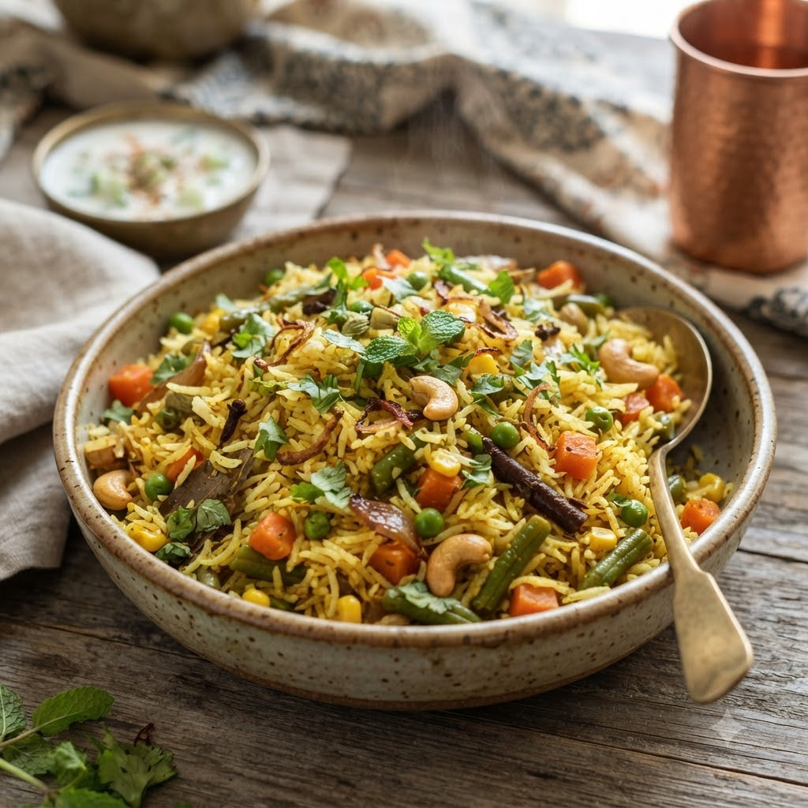

Baked Vegetable Pulao (one-pot)

Baked Vegetable Pulao (one-pot)
Airfryer – Bake 180°C 28 min — Serves 4
🔥 Airfryer🍽 Serves 4
Prep ahead: Soak rice for 20 minutes and drain well before using.
Ingredients
- 1.5 cups basmati rice, soaked 20 min
- 1 cup mixed vegetables (carrot, beans, peas)
- 2.5 cups hot water or stock
- 1 tbsp oil or ghee
- 1 tsp cumin seeds (jeera)
- 1 bay leaf (tej patta)
- 1 tsp ginger-garlic paste (adrak-lehsun paste)
- Salt to taste
Method
1Preheat: Preheat the Airfryer to 180°C for 4 minutes before adding the food to the basket.
2In an oven-safe dish that fits the basket, heat oil, add cumin and bay leaf.
3Add ginger-garlic paste and vegetables; mix in drained rice and salt.
4Pour in hot water, cover the dish tightly with foil.
5Bake at 180°C for 28 minutes; rest covered for 5 minutes before fluffing.
Tip: Keep the dish covered throughout so the rice steams rather than dries out.